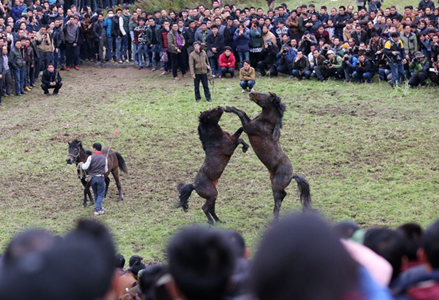

苗族古龙坡会

“古龙坡会”是广西壮族自治区融水苗族自治县四荣一带苗族的传统节日，已有一百多年历史。每年正月十六和八月十六日分别举行：前者预祝丰收，后者庆祝丰收。
古龙坡会内容有芦笙赛、踩堂歌、斗马、斗鸟、赛 马、舞狮、对唱山歌等。其中以芦笙赛和斗马最为热烈。
中午时分，各村芦笙队围成圆圈，吹起欢快悠扬的芦笙芦调，姑娘和小伙子围绕芦笙翩翩起舞，进行“踩堂”，有时上千人参加歌舞。斗马时，一人先将一匹母马牵到马场正中，然后从两边牵来两匹健壮公马，在即将经过母马旁时，两匹公马各自昂头翘尾，高扬前蹄，厉声嘶鸣，向对方扑去并厮斗起来，或咬或踢，时而双双竖立，时而迅猛追逐，场面十分紧张激烈，有的要斗上几十个回合才分胜负，败者退出，胜者又和新牵来的另一匹公马相斗。最后，人们争相向优胜的养马人祝贺。
斗马结束，芦笙赛进入高潮，各村使出全部本领，显示吹奏技能，由坡外倾听的评判员评判优胜者。最后参加 坡会的芦笙队一起合奏，顿时山鸣谷应，响彻云天。
古龙坡会既是一个社交盛会，也是传统民族体育运动会。届时，除苗族外，附近的壮、侗、瑶、汉等各族群众也来参加。